Frozen 2
The heroes, their friends, the shadow of the past, and the voices behind them.
Meet the heroes of Frozen 2. Elsa, Anna, Olaf, Kristoff and Sven travel together into the Enchanted Forest to save Arendelle and uncover the truth about their family's past.
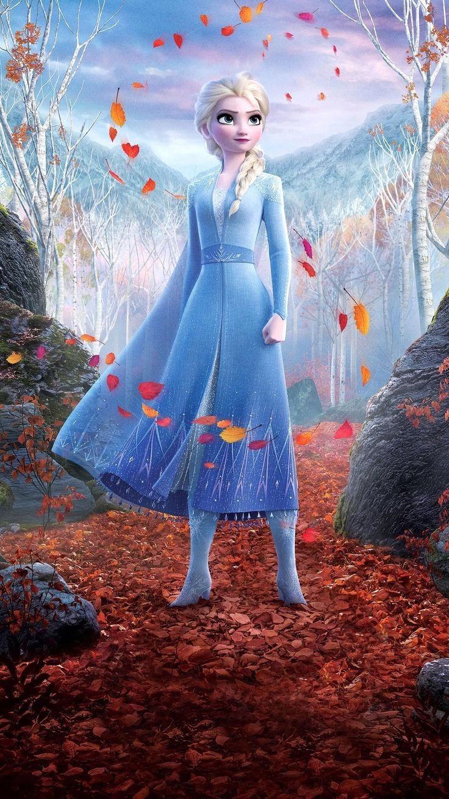
Voiced by Idina Menzel
Elsa is the Snow Queen of Arendelle, born with the power to create ice and snow. She is brave, caring and often carries the weight of protecting everyone she loves. In this film a mysterious voice calls her north, and she needs to understand where her magic comes from. Her journey leads her to Ahtohallan, where she learns she is the fifth spirit, the bridge between humans and nature. In the end she chooses to stay in the Enchanted Forest as its protector.
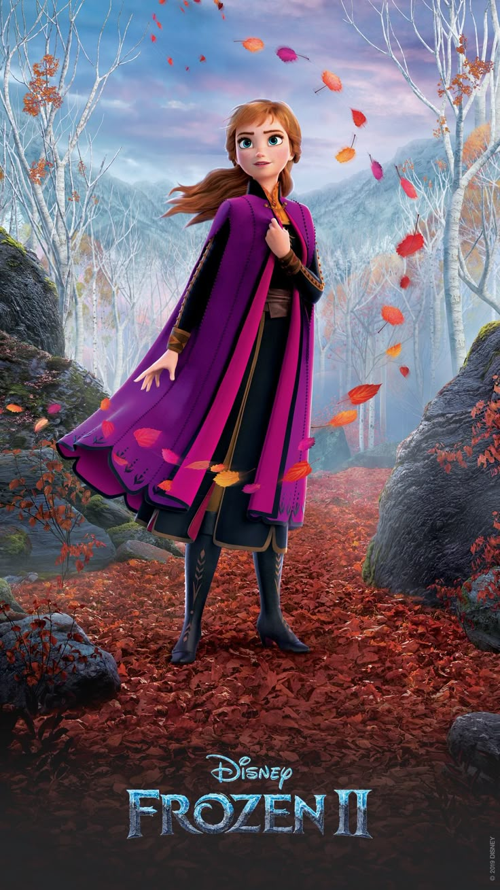
Voiced by Kristen Bell
Anna is Elsa's younger sister and, by the end, the Queen of Arendelle. She is loyal, optimistic and stubborn, and she never gives up on the people she loves. When she believes that all is lost, she keeps going by doing "the next right thing." Her courage leads her to destroy the dam and free the forest. She proves that she does not need magic to be a hero.
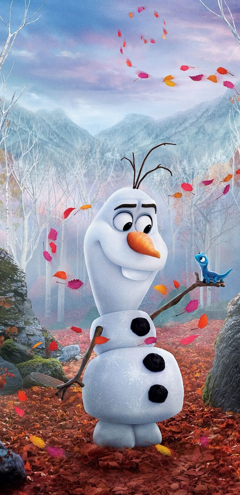
Voiced by Josh Gad
Olaf is a living snowman created by Elsa's magic and is the group's source of humor. He is innocent, curious and always ready with a warm hug. In this film he is starting to understand big ideas like change, loss and growing up. He bravely follows his friends into danger, even when he is afraid. His love for Anna and Elsa makes him one of the most loyal members of the team.
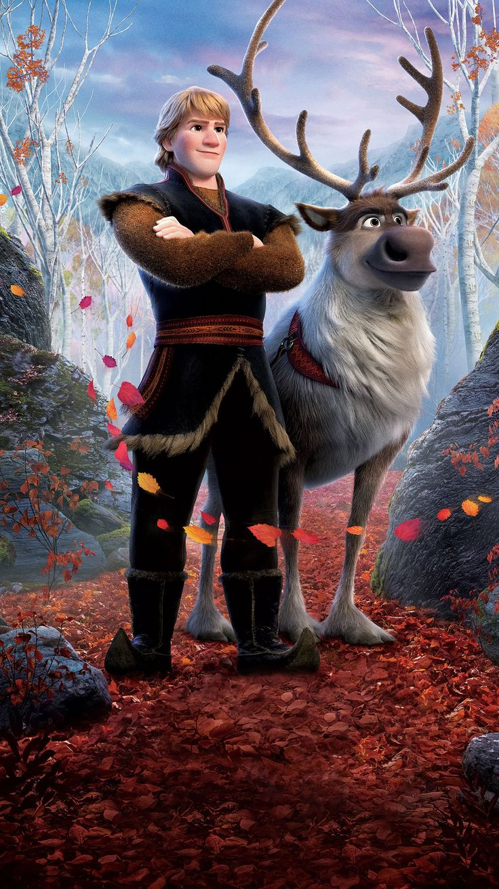
Voiced by Jonathan Groff
Kristoff is a kind and loyal ice harvester who loves Anna deeply. Throughout the journey he tries to find the perfect moment to propose to her. He is honest and a little awkward with his feelings, which he shares through the song "Lost in the Woods." Sven is his faithful reindeer and best friend, who understands him better than anyone. Together they support Anna through every danger.
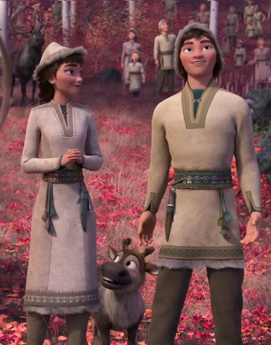
Northuldra siblings who live in the Enchanted Forest. Honeymaren becomes a friend to Elsa and shows her the ways of the Northuldra, while her brother Ryder is a herder.
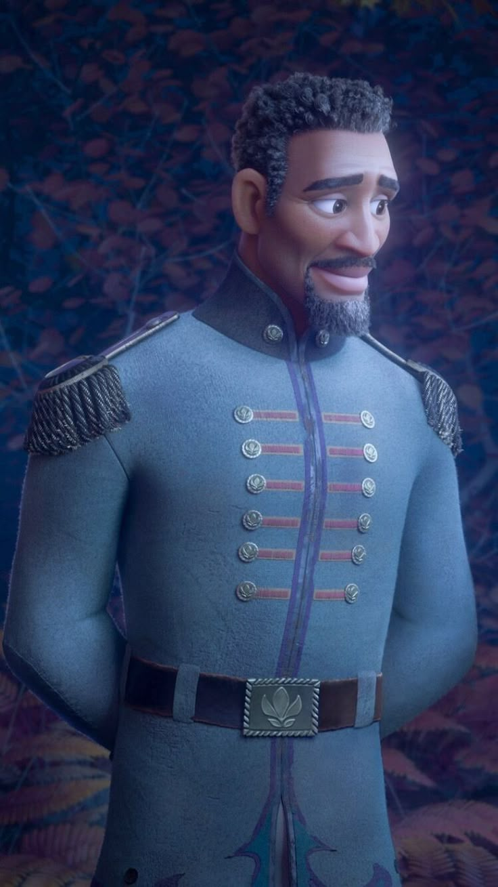
Voiced by Sterling K. Brown
An Arendellian soldier trapped in the forest for 34 years. He was once a mentor to Anna and Elsa's father and holds on to the hope of seeing home again.
The danger in Frozen 2 does not come from a classic villain. It comes from a mistake of the past, and the person most responsible for it is Elsa and Anna's own grandfather.
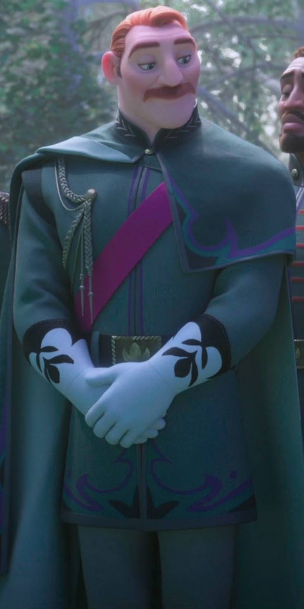
Voiced by Jeremy Sisto
King Runeard was Elsa and Anna's grandfather and the former King of Arendelle. He built a dam in the Enchanted Forest, claiming it was a gift of peace to the Northuldra, but it was really a plan to weaken them. His betrayal caused the battle, the angry spirits and the curse of the mist.
Frozen 2 has no traditional villain. The conflict comes from the past, and King Runeard is the closest thing to an antagonist.
The talented actors who gave the characters of Arendelle and the Enchanted Forest their voices.
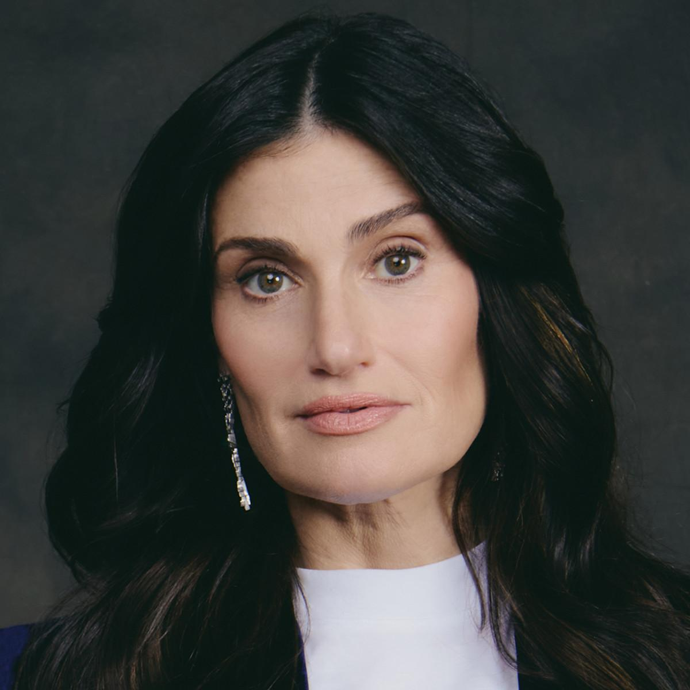
Voice of Elsa
Broadway star who also sings "Into the Unknown" and "Show Yourself."
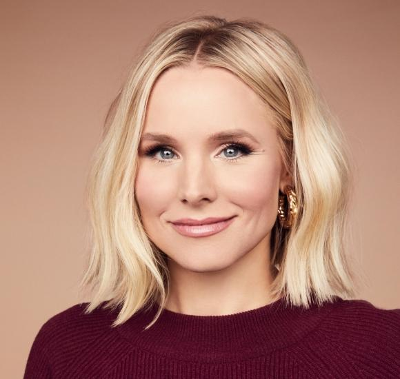
Voice of Anna
Brings Anna's warmth and humor, and sings "The Next Right Thing."
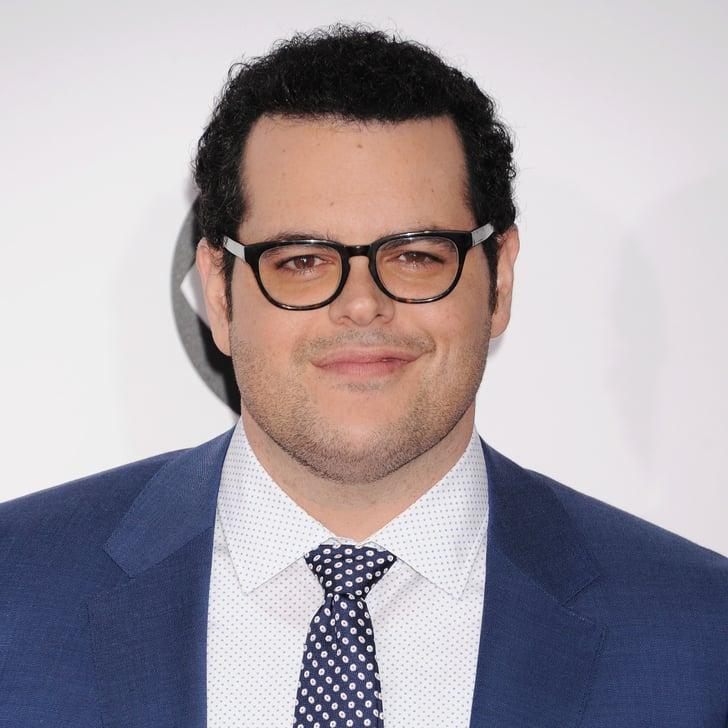
Voice of Olaf
Performs Olaf's funny song "When I Am Older."
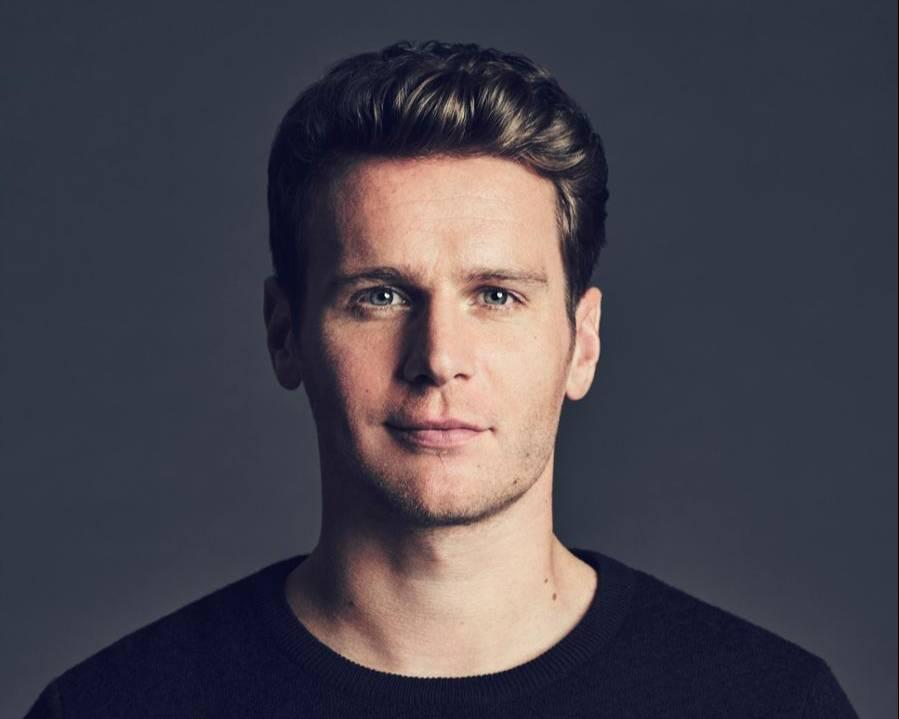
Voice of Kristoff
Sings the 80s-style ballad "Lost in the Woods."
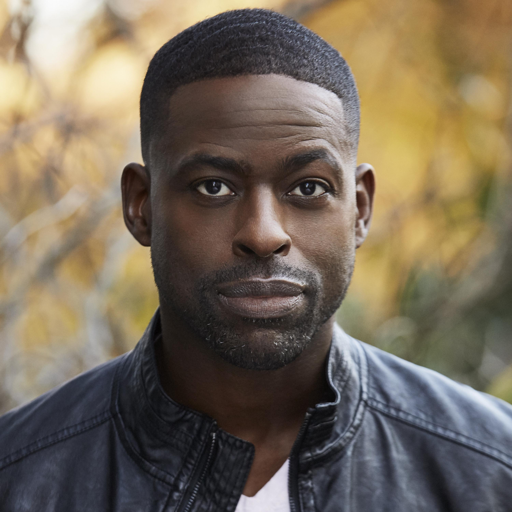
Voice of Lt. Mattias
Plays the Arendellian soldier trapped in the forest.
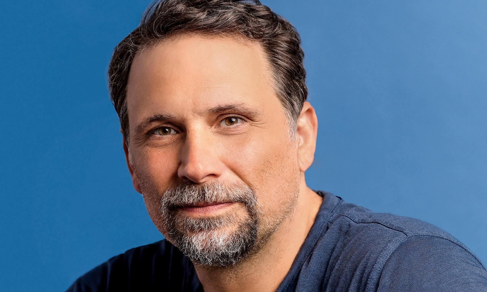
Voice of King Runeard
Gives voice to the movie's antagonist from the past.